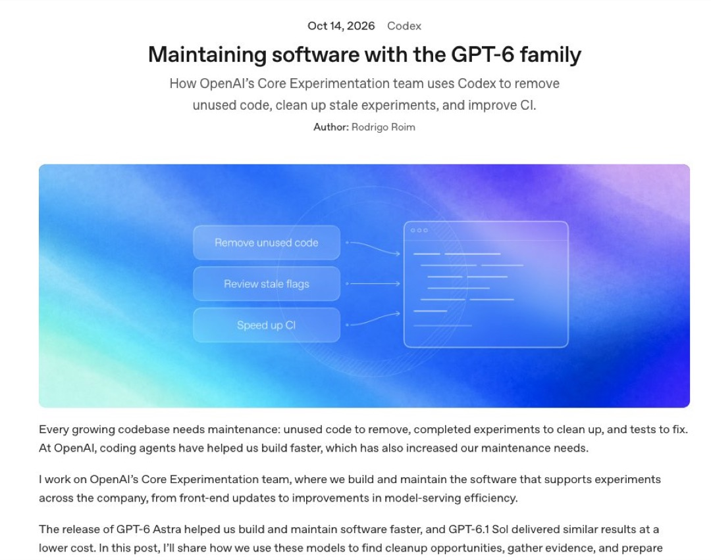
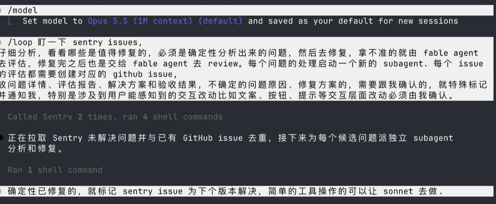
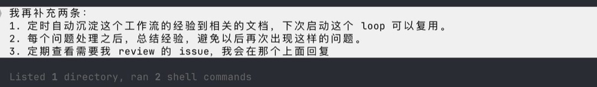
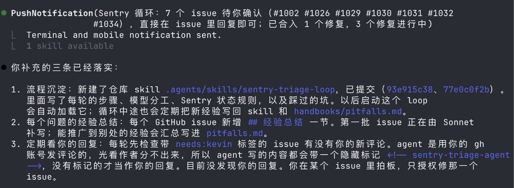
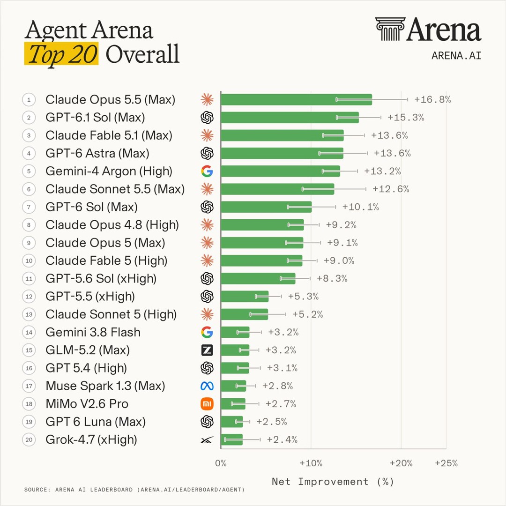
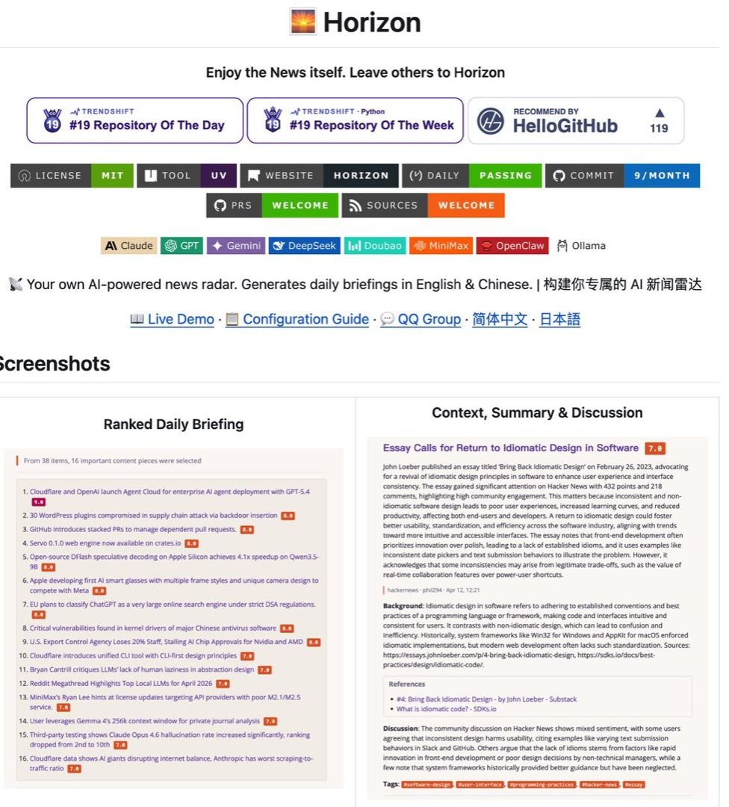

本期速览
02 OpenAI GPT-6 代码库清理实践
03 pstack 将纠错经验压成短原则
04 Step 5 Preview开源权重
05 Claude Code 循环自动修Bug
07 Horizon 聚合多源生成AI简报
01｜php_parkour 让机器人跑酷
来源（X） · @aigeeknews · 2026-10-15 19:27
RSS 2026 的论文用 motion matching 把翻越、跳跃这些人类动态动作串起来，先挑动作再按地形调度，视频和代码都放出来了。
https://github.com/amazon-far/php_parkour
02｜OpenAI GPT-6 代码库清理实践
来源（X） · @CopperForgeAI · 2026-10-15 13:57
靠这些提示词在两周内合并了 1400 多个清理 PR，删除超过 800k 行代码，并将一个服务的容器镜像压缩48%。
第一个提示词用于清理死代码
“请帮我找出并清理仓库里的无用代码。你可以随意查看
Slack、Statsig（功能开关平台）或任何需要的来源，用来确认这些代码确实不再被使用、可以被清理或简化。”
这个提示词的关键在于允许 GPT-6 Astra 自主去翻阅 Slack 讨论、Statsig 实验配置甚至生产环境的性能 profiling数据，只有在确认生产环境零调用后才在 PR 中列出删除依据。
第二个提示词用于清理更棘手的废弃实验与功能开关
“/goal 找出整个仓库中所有陈旧、常量化、已废弃或全量上线的 Statsig开关、配置和实验，在不改变生产行为的前提下安全移除。审计所有项目资产，不限于标记为陈旧的对象。通过枚举、常量、包装函数、别名和动态拼
接名称寻找间接引用。核对生产引用的常量，不只给保守清单。结合生产遥测与性能分析评估 CPU 开销，找出昂贵的无用判断。生成 Markdown报告，按归属和文件工作流分组以便并行处理，附带生产取值、证据与 CPU 开销。不要修改线上配置或服务。”
第三组提示词用于 CI 优化与规则自省
“关于减轻本仓库的 CI 负载你有什么想法？请将想法列成表格，并根据该仓库的历史运行记录，按每天预估节省的 CI 分钟数进行排序。”
面对不稳定测试修复，他们运行：
“/goal 查看所有最近的 CI 运行记录，找出偶发失败的测试并尝试修复，成功则提交PR。你的任务是针对简单问题找到明确修复方案，而不是穷尽修复所有问题。”
针对 agent 上下文规则的自检提示词更精妙：
“翻阅我最近的 Codex 会话记录，找出一条误导了 agent 或导致无效工作的 AGENTS.md指令。选出该会话提示词，在相同仓库快照和模型下重放两次：一次保持原指令不变，一次仅移除或修正该指令。对比任务质量、agent
行为、工具调用、token 消耗与成本，展示该指令并说明修改是否有效。”
强烈建议好好学习和利用这些应用于超大工程实践的提示词

03｜pstack 将纠错经验压成短原则
来源（X） · @runes_leo · 2026-10-15 16:20
引用内容
lauren @poteto
中文译文
pstack 最持久的部分之一或许是其工程原则：非常精简的技能（约 10-20 行代码），将良好的实践提炼为其核心。
随着模型变得更加智能，我预计 pstack 的大多数技能将被压缩为简短的原则或工作流（一系列通用的步骤），并且我将能够删除其中一些。
其工作方式是，/poteto-mode 包含一个可用原则的简短索引，并告诉代理"在你的回复中，指出每一条影响了决策的原则，以及它改变的具体选择。"这就是为什么你经常会看到代理回复末尾有一个 Principles Named or Used（已命名或使用的原则）部分
许多这些原则是从我今年年初以来纠正代理的会话中提取出来的。其中一些受到我看到人们讨论的问题的启发，比如 Attack the Premise，灵感来自 @VictorTaelin 的帖子 https://x.com/VictorTaelin/status/2096273196412498057
如果你想要更大的控制权，也可以将这些原则作为技能使用，通过调用 /principle-<name>
https://github.com/cursor/plugins/blob/main/pstack/docs/guide/08-principles.md
原文
perhaps one of the most durable parts of pstack are its engineering principles: very concise skills (~10-20 loc) that distill down good practices into its core.
as models get smarter, i expect most of pstack skills to compress into short principles or workflows (a generic list of steps) and that i will be able to delete a few of them.
how it works is that /poteto-mode contains a short index of available principles and tells agents "In your reply, name each principle that shaped a decision and the specific choice it changed." this is why you'll often see a Principles Named or Used section at the end of the agent's response
many of these principles were extracted from my sessions correcting agents since the start of this year. some are inspired by problems i see people talk about, like Attack the Premise, inspired by @VictorTaelin's post https://x.com/VictorTaelin/status/2096273196412498057
you can also use the principles as skills if you want greater control, by invoking /principle-<name>
https://github.com/cursor/plugins/blob/main/pstack/docs/guide/08-principles.md
04｜Step 5 Preview开源权重
来源（X） · @hungryturbo · 2026-10-15 19:31
总参数量 600B，稀疏 MoE 架构，每 token 激活参数 27B，100 万 token 上下文窗口，原生支持文本和视觉输入。
最近 Step 5 Preview 在OpenRouter 周调用量，日调用量榜单中都排到了全球第二。
传送门：http://huggingface.co/stepfun-ai/Step-5-Preview
05｜Claude Code 循环自动修Bug
来源（X） · @kevinma_dev_zh · 2026-10-15 15:45
这个 issue loop 连续跑了两天，效果特别好，集中处理一批问题，也发现了生产环境中的一些问题。除了健壮性更好，这个 loop 还会自动总结积累经验，跑越久，codebase 的 agent 运行环境越成熟。
真正实现了 human in the loop，opus 5.5 做主控，subagent 独立分析和解决每个 issue，fable 做决策兜底和 code review验收。涉及到架构设计、文案、产品交互的必需由我确认，对于产品功能及架构方面需要优化的，建立独立 issue 由另外的流程再推进。
引用内容
Kevin Ma @kevinma_dev_zh
首先，所有错误收集都统一接入了 Sentry，包括移动端、桌面端、服务端、浏览器插件和官网。
然后给予 Agent 连接 Sentry、PostHog 和 Supabase 的访问权限，让它能够充分获取上下文去分析问题。对了，我使用 monorepo, 所有文档和代码都在一个仓库。
最后，启动一个 loop 去监控和分析，定期总结经验，并使用 github issue 处理需要我确认的事项。
这个过程不断迭代，流程和经验沉淀到文档与 skill，最近刚开始跑，还不错，预期会越来越方便。
提示词可以给大家参考下
```
/loop 盯一下 sentry issues, 仔细分析，看看哪些是值得修复的，必须是确定性分析出来的问题，然后去修复，拿不准的就由 fable agent 去评估，修复完之后也是交给 fable agent 去 review。每个问题的处理启动一个新的 subagent. 每个 issue 的评估都需要创建对应的 github issue, 放问题详情、评估报告、解决方案和验收结果，不确定的问题原因、修复方案的，需要跟我确认的，就特殊标记并通知我，特别是涉及到用户能感知到的交互改动比如文案、按钮、提示等交互层面改动必须由我确认。 确定性已修复的，就标记 sentry issue 为下个版本解决，简单的工具操作的可以让 sonnet 去做. 还有：1. 定时自动沉淀这个工作流的经验到相关的文档，下次启动这个 loop 可以复用; 2. 每个问题处理之后，总结经验，避免以后再次出现这样的问题; 3. 定期查看需要我 review 的 issue，我会在那个上面回复。最后，涉及到交互流程、技术架构变更的，也需要我确认。
```



06｜Arena AI开源模型跌出前15
来源（X） · @foxshuo · 2026-10-15 17:59

07｜Horizon 聚合多源生成AI简报
来源（X） · @grgerwcwetwet · 2026-10-15 19:40
1、聚合 X、Telegram、Reddit、GitHub、Hacker News、RSS 等多个信息源。
2、AI 自动筛选、评分、去重，把真正值得看的内容留下来。
3、自动生成中英文每日简报，还能补充事件背景和网友讨论。
GitHub： https://github.com/Thysrael/Horizon
